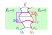
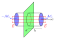

Betrachte zwei beliebig geformte und beliebig zueinander stehende Leiter.
Die Leiter tragen dabei eine Oberflächenladung $Q_i$ und haben ein Potential $\phi_i$.
Die Feldlinien sollen hierbei an einem Leiter starten und am anderen enden.

Betrachte nun ein Volumen $V$, das in beide Leiter hineinragt und dessen Rand
zwischen den Leitern den Feldlinien folgt.
Nun machen wir zwei Beobachtungen:
Die vom Volumen eingeschlossene Ladung ist $q_\text{ein} = \Delta Q_1 + \Delta Q_2$
Der Fluss durch das Volumen ist 0
Der elektrische Fluss durch eine geschlossene Oberfläche ist definiert als
$$\Phi_e = \oint_A \vec{E}\ \text{d}\vec{A}$$
Der elektrische Fluss durch die Volumenoberfläche in den Leitern ist 0, da das
E-Feld dort konstant 0 ist.
Der elektrische Fluss durch die Volumenoberfläche zwischen den Leitern ist
ebenfalls 0, da $\vec{E} \perp \text{d}\vec{A}$ und somit $\vec{E} \cdot \text{d}\vec{A} = 0$
Eingesetzt in die 1. Maxwell Gleichung (phyikalischer
Satz von Gauß) ergibt sich
\begin{align*}
\Phi_e &= \frac{q_\text{ein}}{\varepsilon_0} \\
0 &= \frac{\Delta Q_1 + \Delta Q_2}{\varepsilon_0} \\
\Leftrightarrow \Delta Q_1 &= -\Delta Q_2
\end{align*}
Legt man also ein Volumen entlang der Feldlinien, so ist die eingeschlossene Ladung
auf dem einen Leiter gleich der negativen Ladung auf dem anderen Leiter.
Bezogen auf die gesamte Oberfläche ergibt sich
$$\mathbf{Q_1 = -Q_2}$$
Die positive von den beiden Ladungen nennt man die im Kondensator gespeicherter
Ladung Q.
Kapazität
Die Kapzität eines Kondensators $C$ ist das Verhältnis zwischen der in einem
Kondensator gespeicherten Ladung $Q$ und der Spannung zwischen den Platten $U$.
$$\mathbf{C = \frac{Q}{U}}$$
Plattenkondensator
Ein Plattenkondensator besteht aus zwei gleich großen metallischen Platten, die
parallel zueinander stehen und für deren Fläche $A$ und deren Abstand $d$
$$A \gg d^2$$
gilt.
Betrachte zunächst eine einzelne Platte mit der Oberflächenladungsdichte $\sigma$.

Betrachte weiterhin ein Volumen $V$, das senkrecht durch diese Platte hindurchsticht.
Der elektrische Fluss $\Phi_e$ durch dieses Volumen ist dann
\begin{align*}
\Phi_e &= \frac{q_\text{ein}}{\varepsilon_0} \\
[E\vec{e}_z \cdot A\vec{e}_z] + [-E\vec{e}_z \cdot (-A\vec{e}_z)] &= \frac{\sigma\cdot A}{\varepsilon_0} \\
2 E\cdot A &= \frac{\sigma\cdot A}{\varepsilon_0} \\
\Leftrightarrow E &= \frac{\sigma}{2\varepsilon_0} \\
\Rightarrow \vec{E}(z) &= \text{sig}(z) \frac{\sigma}{2\varepsilon_0} \vec{e}_z \\
\end{align*}
Die Superposition der E-Felder beider Platten ergibt, dass das E-Feld außerhalb
der Platten 0 und zwischen den Platten
\begin{align*}
E &= E_1 + E_2 \\
E &= \frac{\sigma}{2\varepsilon_0} + \frac{\sigma}{2\varepsilon_0} \\
\mathbf{E} &= \mathbf{\frac{\sigma}{\varepsilon_0}}
\end{align*}
ergibt.
Der Zusammenhang zur Spannung ist dann
\begin{align*}
U &= \int_l \vec{E}\ \text{d}\vec{l} \\
U &= E \int_l \text{d}l \\
U &= E \cdot d \\
\mathbf{E} &= \mathbf{\frac{U}{d}}
\end{align*}
Die Kapazität $C$ des Plattenkondensators berechnet sich dann über
$$C = \frac{Q}{U}$$
\begin{align*}
E &= \frac{\sigma}{\varepsilon_0} \\
E &= \frac{Q}{\varepsilon_0 A} \\
\Leftrightarrow Q &= \varepsilon_0 E A \\
Q &= \varepsilon_0\frac{U A}{d}
\end{align*}
$$\mathbf{C} = \mathbf{\varepsilon_0 \frac{ A}{d}}$$
Kugelkondensator
Ein Kugelkondensator besteht aus zwei konzentrischen metallischen Kugeloberflächen.
 Über den physikalischen Satz von Gauß ergibt sich das E-Feld zwischen den Schalen
\begin{align*}
\vec{\nabla}\vec{E} &= \frac{q_\text{ein}}{\varepsilon_0} \\
E \int_{\partial V}\text{d}A &= \frac{Q}{\varepsilon_0} \\
E \cdot 4\pi r^2 &= \frac{Q}{\varepsilon_0} \\
\Leftrightarrow \mathbf{E} &= \mathbf{\frac{Q}{4\pi\varepsilon_0}\frac{1}{r^2}} \qquad \text{mit} \qquad r_i < r < r_a
\end{align*}
und außerhalb, sowie innerhalb der inneren Kugeloberfläche 0.
Über den physikalischen Satz von Gauß ergibt sich das E-Feld zwischen den Schalen
\begin{align*}
\vec{\nabla}\vec{E} &= \frac{q_\text{ein}}{\varepsilon_0} \\
E \int_{\partial V}\text{d}A &= \frac{Q}{\varepsilon_0} \\
E \cdot 4\pi r^2 &= \frac{Q}{\varepsilon_0} \\
\Leftrightarrow \mathbf{E} &= \mathbf{\frac{Q}{4\pi\varepsilon_0}\frac{1}{r^2}} \qquad \text{mit} \qquad r_i < r < r_a
\end{align*}
und außerhalb, sowie innerhalb der inneren Kugeloberfläche 0.
Die Spannung zwischen den Platten eines Kugelkondensators ist
\begin{align*}
U &= \int_{r_i}^{r_a} \vec{E}\ \text{d}\vec{l} \\
U &= \int_{r_i}^{r_a} E \underbrace{\vec{e}_r \cdot \vec{e}_r}_{=1} \text{d}r \\
U &= \frac{Q}{4\pi\varepsilon_0} \int_{r_i}^{r_a} \frac{1}{r^2}\ \text{d}r \\
\mathbf{U} &= \mathbf{\frac{Q}{4\pi\varepsilon_0} \Big( \frac{1}{r_i} - \frac{1}{r_a}\Big)}
\end{align*}
Die Kapazität eines Kugelkondensators ist somit
\begin{align*}
C &= \frac{Q}{U} \\
C &= \Big[ \frac{1}{4\pi\varepsilon_0} \Big( \frac{1}{r_i} - \frac{1}{r_a}\Big) \Big]^{-1} \\
C &= 4\pi\varepsilon_0 \frac{1}{\frac{1}{r_i} - \frac{1}{r_a}} \\
C &= 4\pi\varepsilon_0 \frac{1}{\frac{r_a}{r_i r_a} - \frac{r_i}{r_i r_a}} \\
\mathbf{C} &= \mathbf{4\pi\varepsilon_0 \frac{r_i r_a}{r_a - r_i}} \\
\end{align*}